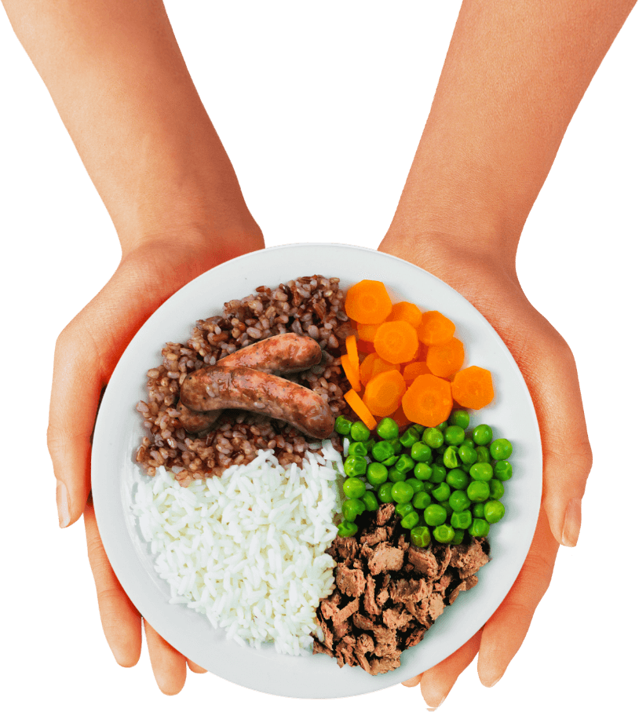
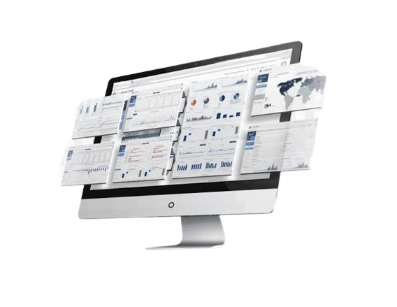

O problema que a solução irá resolver

Desenvolvemos o projeto da plataforma FoodLink utilizando a tecnologia como meio que promove ações para reduzir a fome global e a escassez de alimentos.
Esperamos gerar um impacto social significativo ao envolver estabelecimentos que preparam refeições na rede de recursos alimentares acessíveis para doação.
Público Alvo
Os públicos-alvo dessa solução são os mercados e estabelecimentos comerciais que possuem excedentes de alimentos e desejam contribuir para a redução do desperdício.
As ONGs que trabalham com ações sociais e enfrentam dificuldades em adquirir alimentos também são parte do público-alvo. Essa solução conecta esses dois grupos, facilitando o processo de doação.
Tecnologia
A solução será desenvolvida utilizando tecnologias web modernas, como HTML, CSS e JavaScript para a construção da interface e interações com o usuário.
Também serão utilizadas tecnologias de back-end, como um banco de dados para armazenar informações sobre os estabelecimentos doadores e organizações receptoras cadastrados, e uma linguagem de programação, como Python ou Node.js, para desenvolver a lógica de negócios e gerenciar as doações.

Objetivos

Os principais objetivos dessa solução são reduzir o desperdício de alimentos, facilitar o processo de doação por parte de estabelecimentos que preparam refeições, e contribuir para a segurança alimentar de pessoas em situação de vulnerabilidade.
Além disso, buscamos promover a conscientização sobre o desperdício de alimentos e incentivar práticas mais sustentáveis na cadeia de abastecimento, estabelecendo parcerias duradouras entre estabelecimentos que preparam refeições e organizações receptoras dos alimentos.
Benefícios
A solução oferece benefícios como a redução do desperdício de alimentos, maior eficiência nas doações, ampliação do alcance das ONGs e melhoria na qualidade das doações.
Além disso, fortalece a responsabilidade social das empresas, melhora a segurança alimentar de pessoas em situação de vulnerabilidade e promove uma sociedade mais sustentável.
Solução

A nossa solução FoodLink é um site que atua como intermediário entre restaurantes, cafeterias, bares, lanchonetes e estabelecimentos de foodservice com as ONGs e Banco de Alimentos, facilitando a doação de alimentos excedentes.
Por meio da nossa plataforma, os estabelecimentos doadores poderão cadastrar seus excedentes de alimentos, especificando quantidade, tipo de alimento e localização, e notificar os estabelecimentos receptores das doações sobre seus alimentos disponíveis.
As ONGs e Banco de Alimentos, pr sua vez, terão acesso a essas informações e podem pesquisar, solicitar e agendar a retirada dos alimentos diretamente nos estabelecimentos ou, alternativamente, os estabelecimentos doadores poderão optar pelo serviço de entrega organizado pelo FoodLink, mediante ao pagamento de uma taxa.